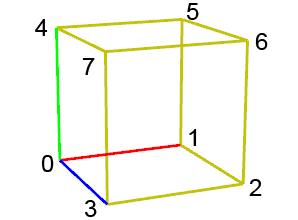
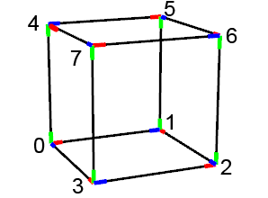
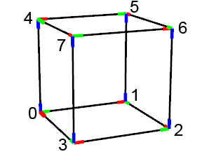
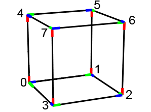

setPivot operation
axisMap selector Selector which defines the mapping of the old scope axes to the new pivot (and scope) axes.
| xyz | Keeps the current orientation, i.e. in corner 0 (the origin, see visual guide below), the new x-axis will point along the old scope's x-axis, the new y-axis will point along the old scope's y-axis and the new z-axis will point along the old scope's z-axis. |
| yzx | In corner 0, the new x-axis will point along the old scope's z-axis, the new y-axis will point along the old scope's x-axis and the new z-axis will point along the old scope's x-axis. |
| zxy | In corner 0, the new x-axis will point along the old scope's y-axis, the new y-axis will point along the old scope's z-axis and the new z-axis will point along the old scope's x-axis. |
cornerIndex float Integer value in [0, 7] to select one of the scope's corners to become the new pivot.p.
The setPivot operation lets you re-position and re-orient the current shape's pivot. The new orientation will be based on the current shape's scope axes, the axisMap selector and the cornerIndex.
The new pivot.p will lie at a selected corner (cornerIndex) of the current shape's scope, and the pivot will be rotated such that all axes point inside the scope.
The new scope will have zero translation and rotation (relative to the pivot), and will stay at the same place (in world coordinates), but with different axes. The geometry is projected to the new scope (i.e. stays at the same place in world coordinates).
Visual Guide

The scope of the current shape prior to the setPivot operation is depicted in the picture on the left. The numbers depict the cornerIndices.

The pivots after setPivot(xyz, v) with v = cornerIndex.
Note the orientation of the pivots: in corner 0, the axes are the same as the original scope axes; at all other corners, the direction of y is the same (or the negative) of the y axis of the original scope. The other axes are oriented such that they conicide with a scope axis.

The pivots after setPivot(yzx, v) with v = cornerIndex.
Note the orientation of the pivots: in corner 0, the scope axes xyz are replaced by the axes yzx.

The pivots after setPivot(zxy, v) with v = cornerIndex.
Note the orientation of the pivots: in corner 0, the scope axes xyz are replaced by the axes zxy.